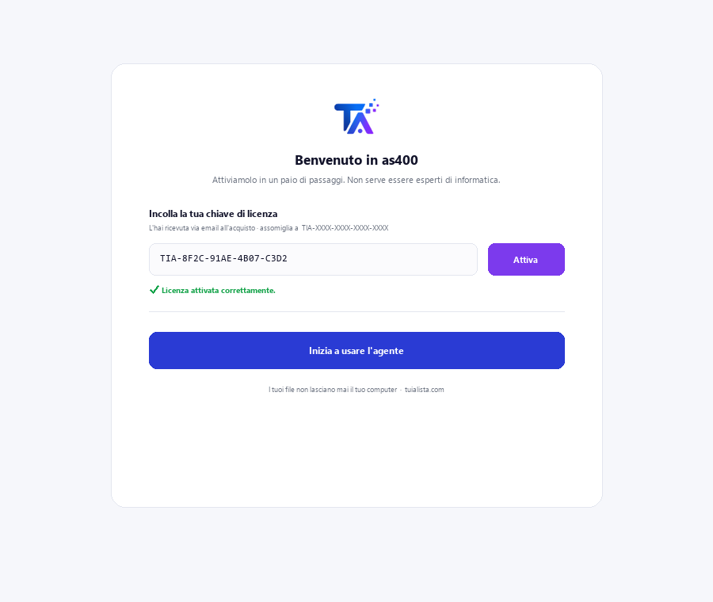
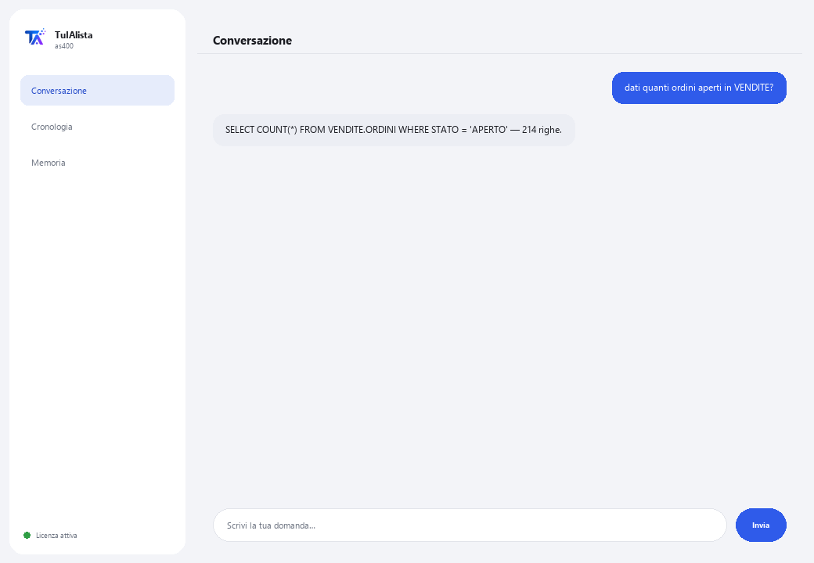

Agente AS/400 (IBM i) · Premium
Interroga il tuo DB2 for i in linguaggio naturale e comprende codice RPG/COBOL ereditato — senza conoscere SQL né il sistema.
Cosa risolve e cosa ti serve?
Le competenze IBM i scarseggiano a livello mondiale. Questo agente è il ponte tra il tuo sistema AS/400 ereditato e il linguaggio naturale: fai domande nella tua lingua e ti restituisce dati reali da DB2 for i, oppure gli passi un sorgente RPG/COBOL e te lo spiega senza tecnicismi.
- Ti serve: la tua chiave di licenza (TIA-XXXX-XXXX-XXXX-XXXX) e accesso all'IBM i (host, utente e password con l'IBM i Access ODBC Driver installato). Pensato per un profilo tecnico (IT / amministrazione IBM i).
- Primo risultato: installi, attivi la tua licenza e, dopo aver configurato la connessione, esegui dati <la tua domanda>.
- Il tuo IBM i, i suoi dati e il tuo codice non lasciano mai la tua rete — la connessione e le query avvengono in locale.
soporte@tuialista.com o visita tuialista.com/soporte — di solito rispondiamo lo stesso giorno lavorativo.1 Cosa fa questo agente
Risolve due problemi costosi e difficili da coprire a causa della carenza mondiale di competenze IBM i:
- Interrogare dati in DB2 for i senza conoscere SQL né il sistema. Fai domande in linguaggio normale e l'agente genera una query SELECT in DB2 for i (sola lettura), la esegue e ti mostra il risultato.
- Comprendere codice RPG e COBOL ereditato. Gli passi un sorgente RPG/COBOL e te lo spiega in linguaggio chiaro: cosa fa, quali dati gestisce e cosa produce, senza dare per scontato che tu conosca il linguaggio.
Tutto avviene localmente, all'interno della tua rete: la connessione all'IBM i e i dati non lasciano mai la tua infrastruttura.
2 Installazione
Per Windows. Questo agente ha un passaggio in più rispetto agli altri: la connessione all'IBM i si configura separatamente, non dalla finestra di attivazione.
Scarica l'installer da tuialista.com/descargar (agente AS/400) e aprilo. Crea un collegamento sul desktop con il logo — non richiede Python né terminale.
Doppio clic sulla nuova icona. Incolla la tua chiave di licenza (ricevuta via email all'acquisto) e premi Attiva. A differenza di altri agenti, non ti chiede di scegliere una cartella — questo agente si connette a un database, non a file locali.
Installa l'IBM i Access ODBC Driver (da IBM i Access Client Solutions) sul dispositivo dove gira l'agente, e definisci le variabili d'ambiente AS400_HOST, AS400_USER e AS400_PASSWORD con i dati del tuo sistema. Questo passaggio viene normalmente eseguito dal reparto IT.

3 Come usarlo
L'agente apre una finestra di chat, come un'app di messaggistica — non è uno schermo nero da programmatore. Ha due comandi oltre a esci:

> dati <domanda>Scrivi la tua domanda in linguaggio naturale. L'agente genera una query SELECT in DB2 for i (sintassi LIBRERIA.TABELLA), la convalida come sola lettura e la esegue. Es.: dati quanti ordini aperti ci sono nella libreria VENDITE? I risultati sono limitati a 100 righe per query.
> spiega <file>Gli passi il percorso di un file con codice sorgente RPG o COBOL e ti spiega il suo scopo, i dati che gestisce e cosa produce, senza tecnicismi inutili.
> esciTermina la sessione (funziona anche exit).
4 Esempi di uso comune
Un conteggio operativo
dati quante fatture sono state emesse ieri?
Un totale da una tabella fisica
dati somma l'importo degli ordini della libreria VENDITE di questo mese
Spiegare un programma che “nessuno capisce”
spiega /home/sorgenti/CALCNOM.cbl — ideale quando eredit migliaia di righe di RPG/COBOL senza documentazione.
Costruire un ponte verso il moderno
Usa dati per estrarre numeri dall'IBM i e portarli in un report o dashboard, senza esporre il sistema ereditato a strumenti esterni.
5 Domande frequenti
Può modificare o danneggiare i dati di produzione dell'IBM i?
Ho bisogno del driver di IBM in ogni caso?
I dati dell'IBM i lasciano la mia rete?
Quali linguaggi di codice può spiegare?
Genera SQL standard o di DB2 for i?
Quante righe restituisce una query?
In quale lingua risponde?
Perché è “Premium”?
Posso puntare a più librerie?
L'SQL generato è sempre corretto?
6 Risoluzione dei problemi
“pyodbc e il driver 'IBM i Access ODBC Driver' mancanti”
Non si connette all'IBM i
“Sono consentite solo query di lettura (SELECT)”
Mostra “Licenza non valida” o chiede di riconnettersi
“Nessun fornitore IA configurato”
Nessuna di queste soluzioni ha risolto il tuo problema? Scrivici direttamente — saremo felici di rivederlo con te.
soporte@tuialista.com o visita tuialista.com/soporte — di solito rispondiamo lo stesso giorno lavorativo.7 Privacy e riservatezza
Il tuo IBM i, i suoi dati e il tuo codice non lasciano mai la tua rete.
- L'agente si connette all'IBM i localmente (all'interno della tua rete) e vi esegue le query. I risultati non vengono caricati su nessun server.
- Solo lo schema (nomi di tabelle/colonne) e la tua domanda vengono inviati all'IA per redigere la query SELECT, o il sorgente RPG/COBOL che chiedi di spiegare. I dati restituiti da una query non vengono trasmessi al motore IA.
- L'unica cosa che viaggia su internet è: (1) una verifica che la tua licenza sia attiva, e (2) il contesto necessario (schema + domanda, o il codice da spiegare) per generare la risposta.